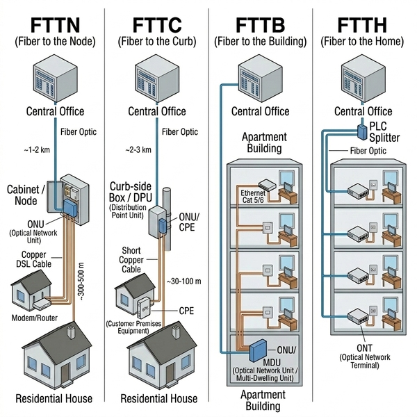
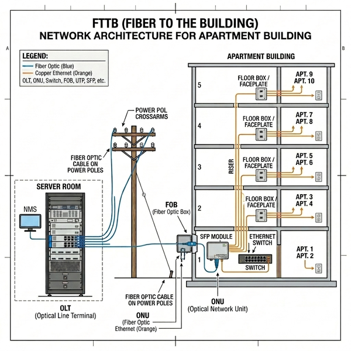
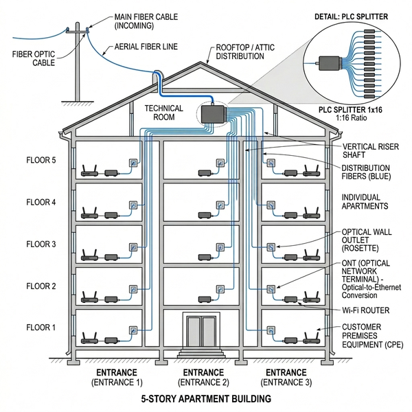
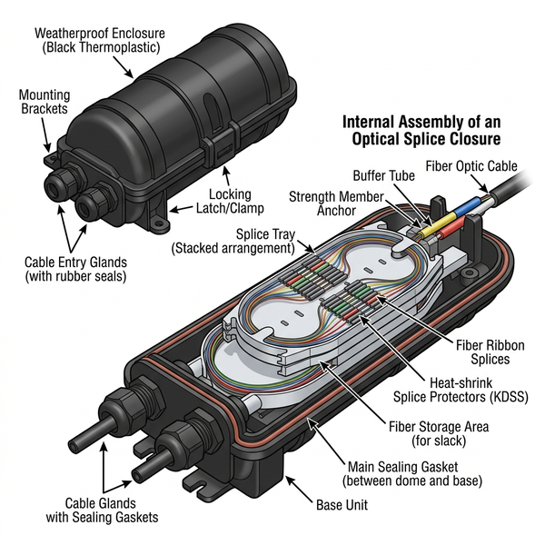
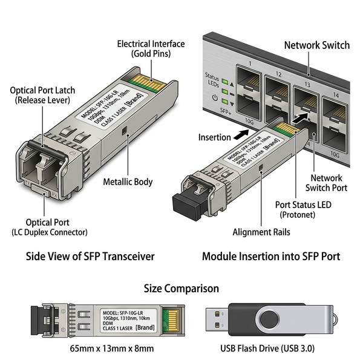
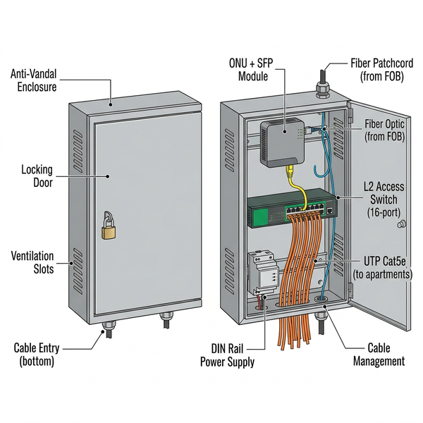

Дисципліна: Практика з комп'ютерних мереж та систем
Лекція 4-5. Побудова проєкту комп'ютерної мережі для місцевості з багатоповерховими будинками
Мета лекції: дослідити особливості проєктування комп'ютерних мереж для місцевості з багатоповерховою забудовою із підключенням до Інтернету; сформувати системне розуміння сімейства технологій FTTx та їх архітектурних особливостей; опанувати специфіку побудови мереж FTTB і FTTH для багатоповерхових будинків.
План вивчення:
- Аналіз місцевості та перехід від приватного сектора до багатоповерхової забудови.
- Сімейство технологій FTTx: від вузла до квартири.
- Архітектура мережі FTTB: «Оптика до будівлі».
- Архітектура мережі FTTH: «Оптика до квартири».
- Обладнання для побудови мережі багатоповерхівок.
- Практичне моделювання: інтеграція з системою PON Designer.
Ключові терміни: FTTx, FTTN (Fiber to the Node), FTTC (Fiber to the Curb), FTTB (Fiber to the Building), FTTH (Fiber to the Home), оптична муфта, SFP-модуль, ONU, Metro Ethernet, MDU (Multi-Dwelling Unit).
1. Аналіз місцевості та перехід від приватного сектора до багатоповерхової забудови
У першій частині нашої практики ми детально розглянули побудову комп'ютерної мережі за технологією PON (Passive Optical Network — пасивна оптична мережа) для населених пунктів із переважно одноповерховою забудовою (приватний сектор). Ми освоїли принципи роботи зварних (FBT) та планарних (PLC) дільників, навчились розраховувати оптичний бюджет і проєктувати мережі «Шина» та «Дерево». Тепер настав час перейти до другої частини — проєктування мереж для багатоповерхових житлових будинків.
Реаліями сьогодення є масштабне будівництво житлових комплексів, до яких входять переважно багатоповерхові будинки. У таких умовах постійно постає питання про підключення нових користувачів до мережі по мірі продажу квартир. Послуги мережевих сервісів XXI століття невпинно підвищують вимоги до якості та швидкості, що спричиняє безперервне оновлення апаратного забезпечення вже наявних мереж. Для утримання позицій на ринку інтернет-послуг провайдерам доводиться застосовувати технології широкосмугового доступу до мережі, серед яких найбільш уживаними для багатоповерхівок є FTTB та FTTH.
Ключова відмінність. При проєктуванні міських мереж ділянки з одноповерховими будинками (приватний сектор) обслуговуються технологією PON — пасивна оптична мережа з дільниками. Натомість для багатоповерхових будинків застосовуються технології FTTB/FTTH, де кожна будівля отримує виділене оптичне волокно (або кілька волокон), а розподіл сигналу всередині будинку здійснюється принципово іншим чином.
Перед початком проєктування мережі для багатоповерхової забудови інженер, як і у випадку з приватним сектором, виконує аналіз місцевості. На карті виділяються багатоповерхові будинки (зазвичай червоними або синіми маркерами), фіксується кількість поверхів і під'їздів кожного будинку, аналізується розташування стовпів ліній електропередач (ЛЕП) для підвісного монтажу кабелю, а також обстежуються колодязі кабельної каналізації для підземного прокладання.
Таблиця 4-5.1. Порівняння підходів до проєктування мережі: приватний сектор vs багатоповерхівки
| Критерій | Приватний сектор (PON) | Багатоповерхова забудова (FTTB/FTTH) |
|---|---|---|
| Технологія | PON (GEPON/GPON) — пасивна оптична мережа з дільниками |
FTTx — виділене волокно до будівлі або квартири |
| Спільне волокно | Одне волокно на 64 абоненти (через каскад дільників) |
Окреме волокно на кожен будинок (FTTB) або квартиру (FTTH) |
| Активне обладнання на лінії |
Відсутнє (тільки OLT та ONU) | Присутнє (ONU + SFP-модуль або комутатор доступу в будинку) |
| Розподіл сигналу | Оптичні дільники FBT/PLC | Оптична муфта + FOB (зварювання волокон) |
| Останній метр | Зовнішній оптичний патчкорд від FOB до ONU абонента |
FTTB: вита пара (UTP) від комутатора в під'їзді до квартири; FTTH: оптика до кожної квартири |
| Кабель | Магістральний 4–12 волокон на все село |
Магістральний 12–48 волокон (по одному на кожен будинок) |
💰 Економічний контекст
Технологія FTTB є найбільш поширеною для побудови широкосмугових мереж багатоповерхівок в Україні. Це обумовлено кількома факторами: значне зниження ціни на оптичні кабелі, розробка великого різноманіття оптичних приймачів різних виробників, доступних за ціною навіть для невеликих провайдерів, а також створення великої кількості оптичних підсилювачів (SFP-модулів), що дозволяють не обчислювати детальні втрати сигналу, як це відбувається при побудові мережі за технологією PON. Характерною ознакою FTTB є запровадження швидкої технології Metro Ethernet, яка значно полегшує роботу провайдера.
2. Сімейство технологій FTTx: від вузла до квартири
Стрімкий та безперервний розвиток інформаційних технологій висуває нові вимоги до смуги пропускання мереж зв'язку. Водночас спостерігається виникнення нових та більш функціональних послуг: відеоконференції, дистанційне навчання, цифрове телебачення, HDTV (High-Definition Television — телебачення високої чіткості), стрімінгові сервіси тощо. Вихід із утвореної ситуації — впровадження економічно вигідних технологій передачі даних, безпосередньо пов'язаних із широкосмуговим каналом зв'язку.
Визначення. FTTx (Fiber to the x — «волокно до ...») — це загальна назва сімейства технологій організації мереж доступу з доведенням оптичного волокна до певної точки, де літера «x» замінюється конкретним позначенням цієї точки (вузол, мікрорайон, будівля, квартира). Відомо, що FTTx — технологія не нова, але саме сьогодні вона стала значно поширеною через причини економічної доступності, архітектурних особливостей та високої надійності.
У сімейство FTTx входять такі види архітектур, які відрізняються ступенем близькості оптичного кабелю до абонентського терміналу:
Таблиця 4-5.2. Порівняльна характеристика архітектур сімейства FTTx
| Архітектура | Розшифровка | Точка закінчення оптичного волокна |
«Останній метр» до абонента |
Типова швидкість | Застосування |
|---|---|---|---|---|---|
| FTTN | Fiber to the Node (волокно до вузла) |
Вуличний розподільчий вузол (шафа, ~1–2 км від абонента) |
Мідний кабель (xDSL, VDSL) |
До 50 Мбіт/с | Застарілі мережі, сільська місцевість |
| FTTC | Fiber to the Curb (волокно до мікрорайону) |
Вуличний бокс біля групи будинків (~300 м від абонента) |
Мідний кабель (VDSL2) |
До 100 Мбіт/с | Перехідний варіант модернізації мереж |
| FTTB | Fiber to the Building (волокно до будівлі) |
Технічне приміщення будинку (підвал, горище або під'їзд) |
Етернет (UTP Cat5e/Cat6) |
До 1 Гбіт/с | Багатоповерхові будинки (основна технологія в Україні) |
| FTTH | Fiber to the Home (волокно до квартири) |
Безпосередньо у квартирі абонента |
Оптика до кінцевого пристрою (ONU) |
До 10 Гбіт/с і вище |
Новобудови, елітна забудова, котеджі |

Рис. 4-5.1. Сімейство технологій FTTx: порівняння точок закінчення оптичного волокна
📖 Переклад ключових термінів із зображення
- Central Office — центральний вузол (серверна провайдера)
- Fiber Optic — оптичне волокно (синій кабель)
- Cabinet / Node — вуличний розподільчий вузол (шафа)
- Curb-side Box / DPU — бокс біля тротуару (розподільчий пункт)
- Copper DSL Cable — мідний кабель DSL
- Residential House — приватний житловий будинок
- Apartment Building — багатоповерховий будинок
- PLC Splitter — планарний оптичний дільник
- ONT (Optical Network Terminal) — оптичний абонентський термінал
Отже, вказані види технології FTTx відрізняються ступенем близькості оптичного кабелю до призначеного для користувача терміналу. Чим різноманітніший набір користувацьких послуг і чим вища швидкість доступу, тим ближче до абонентського терміналу має бути прокладене оптичне волокно. Реаліями сьогодення є підвищення попиту на оптичні мережі з прокладанням кабелю до будівлі (FTTB), а також безпосередньо до абонента (FTTH).
Примітка. У сучасних економіко-технічних умовах архітектуру FTTB використовують переважно в багатоповерхових будинках достатньо великі за кількістю абонентів провайдерські організації. Водночас архітектура FTTH користується попитом при прокладанні мережі в місцевості із малоповерховими будинками, а також у новобудовах, де оптичну розводку закладають ще на етапі будівництва.
3. Архітектура мережі FTTB: «Оптика до будівлі»
Визначення. FTTB (Fiber to the Building — волокно до будівлі) — це архітектура широкосмугового доступу, при якій оптичне волокно прокладається від серверної станції провайдера безпосередньо до технічного приміщення багатоповерхового будинку. Всередині будинку розподіл сигналу між квартирами здійснюється по мідних кабелях (вита пара UTP Cat5e/Cat6) через комутатор доступу або ONU з інтегрованим Ethernet-портами.
3.1. Принцип побудови мережі FTTB
Розглянемо специфіку побудови мережі за технологією FTTB. У серверній провайдера встановлюється головний станційний пристрій OLT (Optical Line Terminal — оптичний лінійний термінал), до якого підключення оптичного кабелю відбувається за допомогою оптичного кросу ODF (Optical Distribution Frame — оптична розподільча панель), що детально розглядалося в Лекції 2 щодо технології PON.
Далі по лініях ЛЕП (ліній електропередач) або по кабельній каналізації оптичний кабель прямує до першого за чергою підключення багатоповерхового будинку. За необхідності розділити один оптичний кабель на два чи більше напрямів, виходячи із географічного розташування будинків, на перехресті вулиць встановлюється оптична муфта.

Рис. 4-5.2. Загальна архітектура мережі FTTB: від OLT до квартири
📖 Переклад ключових термінів із зображення
- Server Room — серверна кімната провайдера
- OLT (Optical Line Terminal) — оптичний лінійний термінал
- NMS — система мережевого управління
- Power Pol Crossarms — траверси лінії електропередач
- Fiber Optic Cable on Power Poles — оптичний кабель на стовпах ЛЕП
- FOB (Fiber Optic Box) — оптичний розподільчий бокс
- SFP Module — SFP-модуль (оптичний трансивер)
- Ethernet Switch — комутатор доступу
- Riser — вертикальний стояк (кабельний канал між поверхами)
- Floor Box / Faceplate — поверхова розетка / панель
- Apt. — квартира (від англ. Apartment)
Перед першим за чергою підключення будинком на лінії ЛЕП або стіні будинку монтується FOB (Fiber Optic Box — оптичний бокс), де з вихідного оптичного кабелю шляхом його розварювання виділяється одне волокно з метою підключити цей будинок до мережі. За допомогою оптичного патчкорду відбувається з'єднання виділеного волокна з абонентським терміналом ONU (Optical Network Unit — оптичний мережевий пристрій), попередньо у відповідний роз'єм якого вставляється SFP-модуль (Small Form-factor Pluggable — змінний оптичний трансивер).
Від абонентського терміналу ONU подається сигнал на керований комутатор доступу рівня L2 (Layer 2 Switch — комутатор другого рівня), а від нього за допомогою кручених пар (UTP — Unshielded Twisted Pair, неекранована вита пара) здійснюється підключення до мережі кожної квартири будинку. Комутатори доступу обираються залежно від кількості квартир обслуговуваного під'їзду чи будинку — на 8, 16, 24 або 48 портів.
3.2. Каскадне підключення будинків
Характерною особливістю технології FTTB є каскадне підключення багатоповерхових будинків уздовж магістральної оптичної лінії. Процес відбувається наступним чином:
- Оптичний кабель визначеної ємності (наприклад, 24 волокна) прокладається від OLT до першого будинку на лінії.
- У FOB першого будинку кабель розварюється: одне волокно виділяється для підключення цього будинку через ONU та SFP-модуль, а решта волокон (23 робочих) продовжують лінію до наступного будинку.
- У FOB кожного наступного будинку повторюється аналогічна процедура: виділяється одне волокно, а решта прямує далі по магістралі.
- По мірі зменшення кількості активних волокон доцільно виконувати заміну кабелю на менш ємний. Наприклад, коли з 12 волокон залишилось 8 робочих — кабель замінюється на 8-волоконний, а коли залишилось 4 — на 4-волоконний. Це дозволяє суттєво зменшити вартість інфраструктури.
Інженерна практика. Кількість волокон у магістральному оптичному кабелі визначається загальною кількістю потенційних абонентських будинків на лінії. Наприклад, якщо на маршруті знаходиться 23 багатоповерхових будинки, використовується кабель на 24 волокна (з урахуванням одного резервного волокна). Якщо оптична муфта розділяє кабель на дві лінії по 12 будинків кожна — після муфти використовуються два кабелі по 12 волокон.
3.3. Особливості технології FTTB
Підсумовуючи, виокремимо інженерні та економічні особливості саме технології FTTB:
- Високий рівень надійності мережі — спричинений наявністю каскадно підключеного не більше одного підсилювача сигналу (наприклад, один SFP-модуль на під'їзд або на будинок залежно від кількості реальних та потенційних абонентів мережі), що значно зменшує ймовірність збою роботи мережі;
- Простота побудови та монтажу мережі — під паралельну цифрову мережу виділяється окреме оптичне волокно, технологія Metro Ethernet забезпечує швидкий монтаж і демонтаж у ключових інстанціях;
- Зниження шумів інгресії — за рахунок підключення до одного ONU меншої, порівняно з іншими технологіями побудови мереж для багатоповерхових будинків, кількості абонентів;
- Відсутність необхідності заземлення несучого тросу — виключені несправності обладнання, спричинені статичною електрикою;
- Простота реалізації нових цифрових технологій — які накладаються на вже наявні FTTB-мережі (наприклад, EttH — Ethernet to the Home);
- Можливість подальшої модернізації до технології FTTH — за рахунок встановлення в абонентській стійці оптичного приймального модуля.
⚡ FTTB та енергозалежність
На відміну від пасивної мережі PON, де між OLT і ONU немає жодного активного обладнання, у мережі FTTB кожен будинковий ONU та комутатор доступу потребує електроживлення. Під час блекаутів або тривалих відключень електрики абоненти FTTB-мережі втрачають доступ до Інтернету, навіть якщо сам провайдер працює від резервного генератора. Це є одним із ключових недоліків FTTB порівняно з PON, де абоненту достатньо живити павербанком лише свій ONU-термінал.
4. Архітектура мережі FTTH: «Оптика до квартири»
Визначення. FTTH (Fiber to the Home — волокно до квартири) — це архітектура широкосмугового доступу, при якій оптичне волокно прокладається безпосередньо до житла абонента (квартири або окремого котеджу). Перетворення оптичного сигналу в електричний відбувається вже всередині квартири на абонентському терміналі ONU/ONT (Optical Network Terminal — оптичний мережевий термінал).
Архітектура FTTH є найбільш прогресивним і перспективним рішенням із сімейства FTTx, оскільки забезпечує максимальну пропускну здатність «останньої милі». У сучасній інженерній практиці виокремлюють два основні типи організації FTTH-мереж:
- FTTH на базі Ethernet (Point-to-Point): кожна квартира отримує виділене волокно від комутатора провайдера. Забезпечує максимальну швидкість і гарантовану смугу пропускання, але потребує значно більшої кількості волокон у магістралі;
- FTTH на базі PON (Point-to-Multipoint): розподіл оптоволоконної лінії між абонентами здійснюється за допомогою планарних дільників PLC різної розмірності (1x8, 1x16, 1x32). Це класична технологія GEPON/GPON, перенесена всередину будинку.
4.1. Горищна схема розводки FTTH
При побудові FTTH-мережі в багатоповерхових будинках використовується так звана горищна схема розводки. Магістральний оптичний кабель заводиться на горище (технічний поверх) будинку, де встановлюється планарний дільник PLC (наприклад, 1x8 або 1x16 залежно від кількості квартир у під'їзді). Від дільника окремі волокна прокладаються вертикальними стояками по під'їзду — з горища вниз по поверхах. На кожному поверсі встановлюються оптичні розетки, від яких абонентським патчкордом підключається ONU/ONT безпосередньо у квартирі абонента.

Рис. 4-5.3. Архітектура FTTH з горищною розводкою: оптичний дільник на горищі та стояки по поверхах
📖 Переклад ключових термінів із зображення
- Main Fiber Cable (Incoming) — головний оптичний кабель (вхідний)
- Aerial Fiber Line — повітряна оптична лінія
- Rooftop / Attic Distribution — горищний розподільчий вузол
- Technical Room — технічне приміщення
- PLC Splitter 1×16 — планарний дільник на 16 виходів
- Vertical Riser Shaft — вертикальна шахта стояка
- Distribution Fibers — розподільчі волокна
- Optical Wall Outlet (Rosette) — оптична настінна розетка
- ONT (Optical Network Terminal) — оптичний мережевий термінал у квартирі
- Wi-Fi Router — бездротовий маршрутизатор
- CPE (Customer Premises Equipment) — обладнання на стороні абонента
- Entrance 1/2/3 — під'їзд 1/2/3
🚀 FTTH у новобудовах
Архітектура FTTH на підґрунті PON зазвичай підтримує протокол Ethernet та дозволяє надавати користувачам традиційні аналогові й цифрові телевізійні послуги через додаткову довжину хвилі 1550 нм (CaTV — Cable Television), і при цьому не використовувати телевізійні приставки з підтримкою IP. Завдяки зменшенню вартості оптичних компонентів, FTTH стає дедалі поширенішою у нових житлових комплексах, де оптичну кабельну інфраструктуру закладають ще на етапі будівництва.
4.2. Порівняння FTTB та FTTH
Таблиця 4-5.3. Порівняльна характеристика архітектур FTTB та FTTH
| Критерій | FTTB (волокно до будівлі) | FTTH (волокно до квартири) |
|---|---|---|
| Середовище «останньої милі» в будинку |
Мідний кабель UTP Cat5e/Cat6 |
Оптичне волокно |
| Максимальна швидкість | До 1 Гбіт/с (обмеження Ethernet) |
До 10 Гбіт/с і вище (XGS-PON, 25G-PON) |
| Активне обладнання в будинку |
ONU + Комутатор L2 (потребує електрики) |
Тільки пасивний PLC-дільник (без електрики) |
| Стійкість до блекаутів | Низька (комутатор вимкнеться) | Висока (немає активного обладнання між OLT та ONU) |
| Вартість розгортання | Нижча (менше оптики всередині будинку) |
Вища (оптика до кожної квартири) |
| Простота обслуговування | Проста заміна порту або патчкорду UTP |
Потребує кваліфікованого монтажу оптичних з'єднань |
| Масштабованість | Обмежена кількістю портів комутатора (8/16/24/48) |
Обмежена кількістю виходів PLC та оптичним бюджетом |
| Перспективність | Модернізація до FTTH потребує перебудови |
Готова до будь-яких майбутніх стандартів |
5. Обладнання для побудови мережі багатоповерхівок
Для побудови мережі за технологіями FTTB та FTTH використовується ряд специфічного обладнання, що відрізняється від компонентів пасивної PON-мережі приватного сектора.
5.1. Оптична муфта (Optical Splice Closure)
При побудові магістральної оптичної лінії для багатоповерхових будинків часто виникає необхідність розділити один оптичний кабель на кілька напрямків відповідно до географічного розташування будинків. Для цього на перехрестях вулиць встановлюється оптична муфта — герметичний корпус, всередині якого відбувається зварювання (розварювання) оптичних волокон.

Рис. 4-5.4. Оптична муфта: зовнішній вигляд та внутрішня конструкція зі сплайс-касетами
📖 Переклад ключових термінів із зображення
- Weatherproof Enclosure — герметичний корпус (захист від погоди)
- Mounting Brackets — монтажні кронштейни
- Cable Entry Glands — кабельні вводи (з гумовими ущільнювачами)
- Locking Latch / Clamp — замок / затискач кришки
- Splice Tray — сплайс-касета (лоток для зварних з'єднань)
- Fiber Optic Cable — оптичний кабель
- Buffer Tube — захисна трубка модуля волокон
- Strength Member Anchor — фіксатор силового елемента
- Fiber Ribbon Splices — зварні з'єднання стрічкових волокон
- Heat-shrink Splice Protectors (KDSS) — термоусаджувальні гільзи КДЗС
- Fiber Storage Area — зона укладки запасу волокна
- Main Sealing Gasket — основна ущільнювальна прокладка
- Base Unit — базовий піддон (нижня частина муфти)
Наприклад, до оптичної муфти приходить оптичний кабель на 24 волокна, де він розварюється на два кабелі по 12 волокон відповідно до двох ліній мережі. Усі зварні з'єднання захищаються гільзами КДЗС (Комплект для Захисту Зварних З'єднань), які фіксуються у спеціальних сплайс-касетах всередині муфти. Корпус муфти має ущільнювачі, що забезпечують захист від пилу, вологи та механічних пошкоджень.
5.2. SFP-модуль (Small Form-factor Pluggable)

Рис. 4-5.5. SFP-модуль (оптичний трансивер): зовнішній вигляд та порти
📖 Переклад ключових термінів із зображення
- Electrical Interface (Gold Pins) — електричний інтерфейс (позолочені контакти)
- Optical Port (LC Duplex Connector) — оптичний порт (дуплексний конектор LC)
- Optical Port Latch (Release Lever) — засувка оптичного порту (важіль вилучення)
- Metallic Body — металевий корпус
- Network Switch — мережевий комутатор
- Network Switch Port — порт мережевого комутатора
- Port Status LED — індикатор стану порту
- Alignment Rails — напрямні рейки (для вставки модуля)
- Size Comparison — порівняння розмірів
SFP (Small Form-factor Pluggable) — це компактний змінний оптичний модуль, технічне найменування якого — оптичний трансивер (від англ. Transceiver — приймально-передавальний пристрій). Зовні це вузький компактний предмет, розмірами ненабагато більший за звичайну USB-флешку. З одного боку в нього знаходиться оптичний порт (одно- або двоволоконний), а з іншого — електричний роз'єм, яким він вставляється в SFP-порт комутатора або маршрутизатора.
Основне призначення SFP-модуля — перетворення сигналу з електричного на оптичний і в зворотному напрямі для передачі по волоконно-оптичних лініях. SFP-модуль виконує функції і приймача, і передавача одночасно: з одного боку його лазер транслює світловий сигнал певної потужності (причому згасання останньої відбувається пропорційно проходженню відстані по оптоволоконному кабелю), а з іншого — цей пристрій здатний прийняти світловий потік певної потужності.
Таблиця 4-5.4. Основні характеристики SFP-модулів для мереж FTTB
| Параметр | Значення |
|---|---|
| Тип конектора | SC/UPC або LC |
| Довжина хвилі | 1310 нм (Tx) / 1490 нм (Rx) |
| Потужність передачі | +2 ..+7 дБм (залежно від моделі) |
| Чутливість приймача | від -26 до -32 дБм |
| Швидкість передачі | 1,25 Гбіт/с (GE SFP) або 10 Гбіт/с (SFP+) |
| Дальність | До 20 км (одномодове волокно SMF) |
5.3. ONU для FTTB (абонентський термінал з SFP-портом)
У технології FTTB абонентський термінал ONU встановлюється безпосередньо в технічному приміщенні будинку (технічний поверх, підвал або спеціальний настінний антивандальний бокс). На відміну від ONU для PON-мережі, що конвертує оптику в RJ-45 для домашнього роутера, ONU для FTTB має SFP-порт для підключення оптичного модуля та один або декілька Ethernet-портів для з'єднання з комутатором доступу.
На практиці ONU та комутатор доступу монтуються разом у антивандальному настінному боксі (Anti-Vandal Enclosure) — герметичному металевому ящику із замком, що кріпиться на стіну горища, підвалу або сходового майданчика. Це забезпечує захист обладнання від механічних пошкоджень, пилу, вологи та несанкціонованого доступу.

Рис. 4-5.6. Антивандальний настінний бокс: зовнішній вигляд та внутрішнє наповнення (ONU, комутатор, блок живлення)
📖 Переклад ключових термінів із зображення
- Anti-Vandal Enclosure — антивандальний настінний бокс (шафа)
- Locking Door — дверцята із замком
- Ventilation Slots — вентиляційні отвори
- Cable Entry — кабельний ввід
- ONU + SFP Module — абонентський термінал з оптичним трансивером
- L2 Access Switch (16-port) — комутатор доступу на 16 портів
- Fiber Patchcord (from FOB) — оптичний патчкорд (від розподільчого боксу)
- UTP Cat5e (to apartments) — виті пари до квартир
- DIN Rail Power Supply — блок живлення на DIN-рейці
- Cable Management — організація кабелів
5.4. Комутатор доступу (Access Switch)
Після перетворення оптичного сигналу в електричний через ONU та SFP-модуль, розподіл сигналу між квартирами одного будинку (або під'їзду) здійснює керований комутатор доступу рівня L2 (Layer 2 Switch). Комутатори обираються за кількістю портів відповідно до навантаження:
Таблиця 4-5.5. Вибір комутатора доступу для FTTB залежно від навантаження
| Кількість квартир у під'їзді/будинку |
Рекомендований комутатор |
Примітка |
|---|---|---|
| До 8 | 8-портовий L2 Switch | Компактний, для невеликих будинків або окремих під'їздів |
| 9–16 | 16-портовий L2 Switch | Оптимальний для типових 5-поверхових будинків |
| 17–24 | 24-портовий L2 Switch | Для 9-поверхових будинків |
| 25–48 | 48-портовий L2 Switch | Для великих будинків або декількох під'їздів |
6. Практичне моделювання: інтеграція з системою PON Designer
PON Designer — це спеціалізований веб-симулятор для інженерного проєктування пасивних оптичних та комутованих мереж, який дозволяє інженерам і студентам переходити від теоретичних табличних розрахунків до реального моделювання на карті. У першій частині практики ми використовували його для побудови PON-мереж з дільниками для приватного сектора. Тепер, у другій частині, ми задіємо нові можливості системи для проєктування мереж багатоповерхової забудови.
Для моделювання мереж FTTB та FTTH у PON Designer реалізовано спеціальний компонент — MDU (Multi-Dwelling Unit — багатоквартирний будинок), який дозволяє проєктувати повний ланцюг доставки сигналу від OLT до кінцевого абонента. Система підтримує два режими роботи MDU:
- Режим FTTB (GEPON): будинок обладнується ONU із сплайс-касетою та SFP-модулем. Квартири підключаються через мідну виту пару від комутатора доступу. Система автоматично підбирає модифікацію комутатора (8, 16, 24 або 48 портів) залежно від навантаження на під'їзд;
- Режим FTTH: реалізована горищна схема розводки з PLC-дільниками. Оптика прокладається по під'їздах з горища вниз по поверхах до кожної квартири. Кожен під'їзд може мати свій дільник та окрему схему кросування.
Ключові можливості PON Designer для побудови мереж багатоповерхівок:
- Побудова гілки (ланки дерева): від OLT через оптичну муфту каскадно по будинках з автоматичним розрахунком затухання на кожній ділянці;
- Рекурсивне трасування сигналу: система автоматично простежує повний фізичний шлях сигналу від OLT через всі транзитні кросування в MDU до кожного кінцевого абонента;
- Автоматичний звіт (BOM — Bill of Materials): деталізований кошторис з урахуванням потрібного обладнання — від OLT та SFP-модулів до гільз КДЗС та витих пар;
- Автоматична побудова схеми топології: візуалізація деревоподібної структури мережі із кольоровою семантикою та індикацією рівня сигналу.
💡 Зв'язок з практичними та лабораторними роботами
У подальших лабораторних роботах другої частини практики ви будете безпосередньо працювати з PON Designer для побудови повноцінних мереж FTTB та FTTH. Ви поставите OLT, побудуєте магістраль через муфти та FOB, підключите багатоповерхові будинки MDU як в режимі FTTB (з комутаторами доступу та витою парою), так і в режимі FTTH (з горищною розводкою та PLC-дільниками). Система автоматично розрахує затухання по всьому ланцюгу і сформує деталізований звіт з кошторисом обладнання.
Контрольні питання:
- У чому полягає принципова відмінність між проєктуванням мережі для приватного сектора (PON) та для багатоповерхових будинків (FTTB/FTTH)?
- Назвіть чотири архітектури сімейства FTTx та поясніть, чим вони відрізняються одна від одної.
- Яка роль оптичної муфти при побудові мережі FTTB? У яких випадках вона необхідна?
- Що таке SFP-модуль? Поясніть його призначення та принцип роботи.
- Яким чином відбувається каскадне підключення будинків до мережі за технологією FTTB? Чому доцільно замінювати кабель на менш ємний по мірі зменшення кількості активних волокон?
- Порівняйте технології FTTB та FTTH: які переваги та недоліки кожної з них?
- Які можливості PON Designer використовуються для моделювання мереж багатоповерхової забудови?